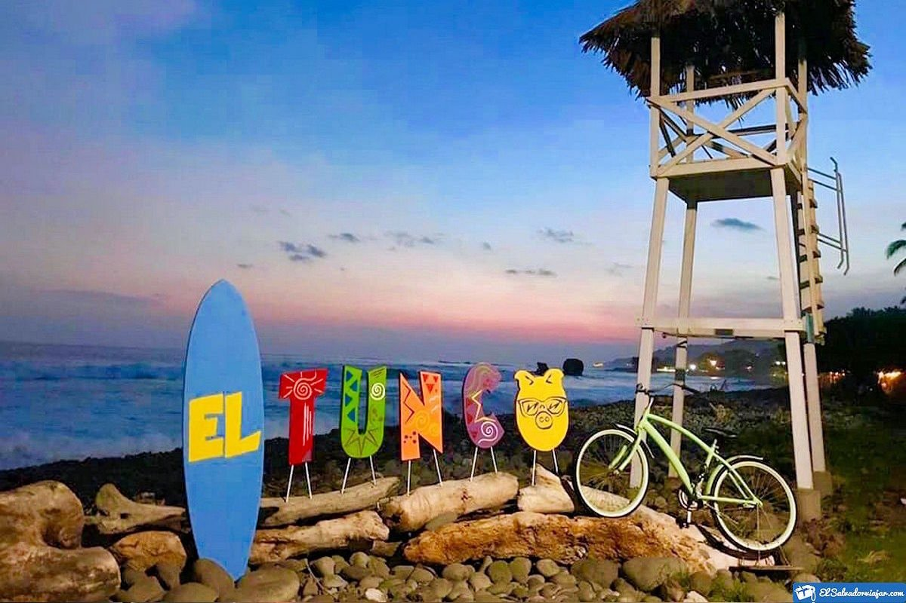

Descubre la playa El Tunco



Playa El Tunco es uno de los destinos turísticos más visitados de El Salvador, conocido por sus olas perfectas para el surf, su ambiente relajado y su vibrante vida nocturna.
Historia y Cultura
comenzó como un pequeño pueblo costero, pero con el tiempo se transformó en un punto turístico reconocido a nivel internacional. Su nombre se debe a una formación rocosa que se asemeja a un cerdo (tunco) y es un símbolo icónico del lugar.
La cultura del lugar está influenciada por el surf, el arte y la convivencia entre locales y turistas que buscan disfrutar de su belleza natural y su ambiente acogedor. A lo largo del año, El Tunco alberga eventos culturales y festivales que celebran la música, el arte y la gastronomía local, haciendo de este destino un lugar vibrante y lleno de vida.
Turismo
El Tunco es famoso por sus playas ideales para surfear, atrayendo a visitantes de todo el mundo que buscan disfrutar de sus olas y su ambiente relajado. Además del surf, los turistas pueden disfrutar de actividades como el yoga, el senderismo y la exploración de cuevas cercanas.
Además, cuenta con restaurantes, bares y eventos nocturnos que lo convierten en un destino perfecto tanto de día como de noche para quienes buscan una experiencia completa en la costa salvadoreña.